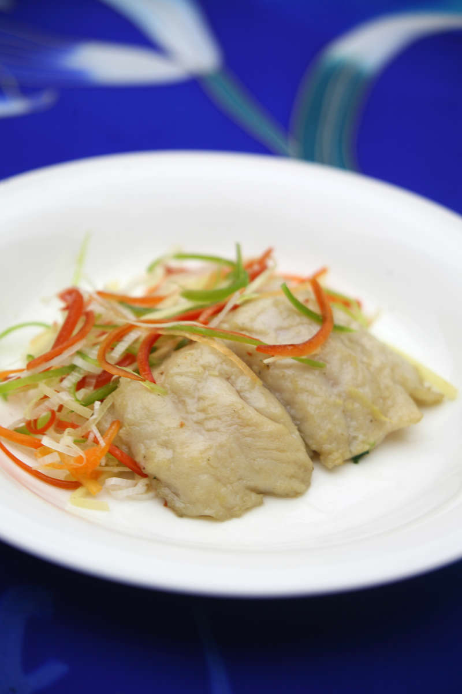

Quanjude Roast Duck
Beijing Roast Duck is know as one of the most famous and delicious dishes all over the world. Every visitor would never forget the flavor after have a try, especially for those meat lovers. The biggest and also the most famous Beijing Roast Duck restaurant is QuanJuDe. It is very complex to make Beijing Roast Duck. Let¡¯s take an example of QuanJuDe, they breed ducks by themselves and train chefs for each cooking processes of roast duck such as slicing, roasting, air-curing and coloring the duck before put it into the roaster. Beijing Roast Duck is crispy outside and tender inside, which is also the reason everyone like it so much.
Besides the traditional Beijing dishes, you can also find foods from other places in China. Sichuan Cuisine is one of the most popular cuisine which characterized by its spicy flavor. Cantonese food is also the second popular cuisine in China and you can also find it in most prosperous streets in Beijing. Beijing contains almost every cuisine from different places in China, the reason they can be here is because of the inclusiveness of Beijing. In the other word, if you come to Beijing, you are going to taste the food all over China.